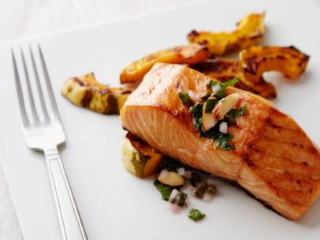

Oven-Baked Salmon

Directions:
- Preheat the oven to 450 degrees F.
- Season salmon with salt and pepper.
- Place salmon, skin side down, on a non-stick baking sheet or in a non-stick pan with an oven-proof handle.
- Bake until salmon is cooked through, about 12 to 15 minutes.
Ingredients:
- 12 ounce salmon fillet, cut into 4 pieces
- Coarse-grained salt
- Freshly ground black pepper
- Toasted Almond Parsley Salsa, for serving